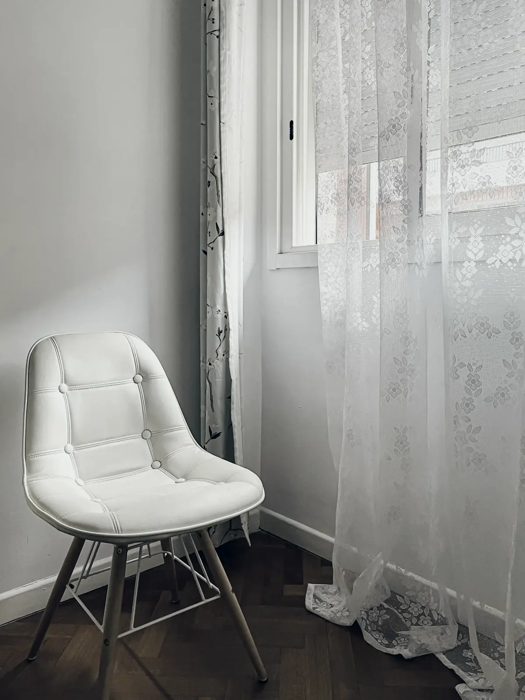
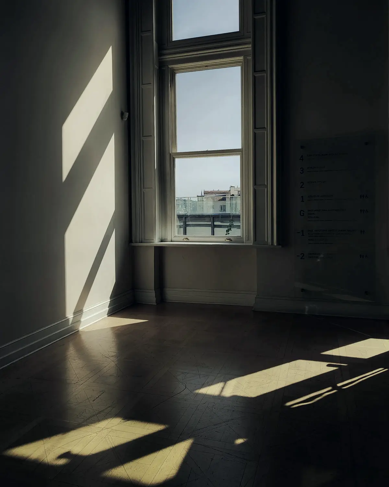
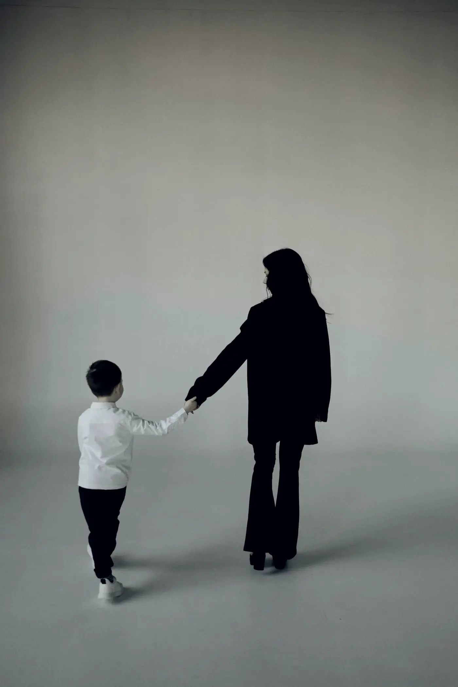
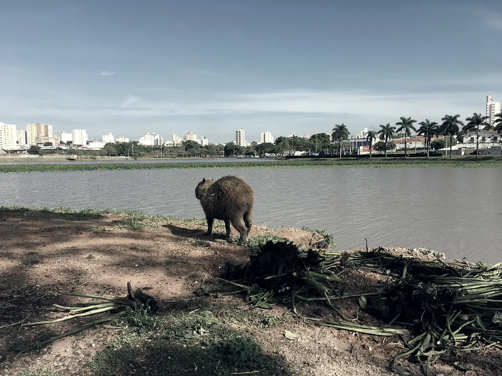
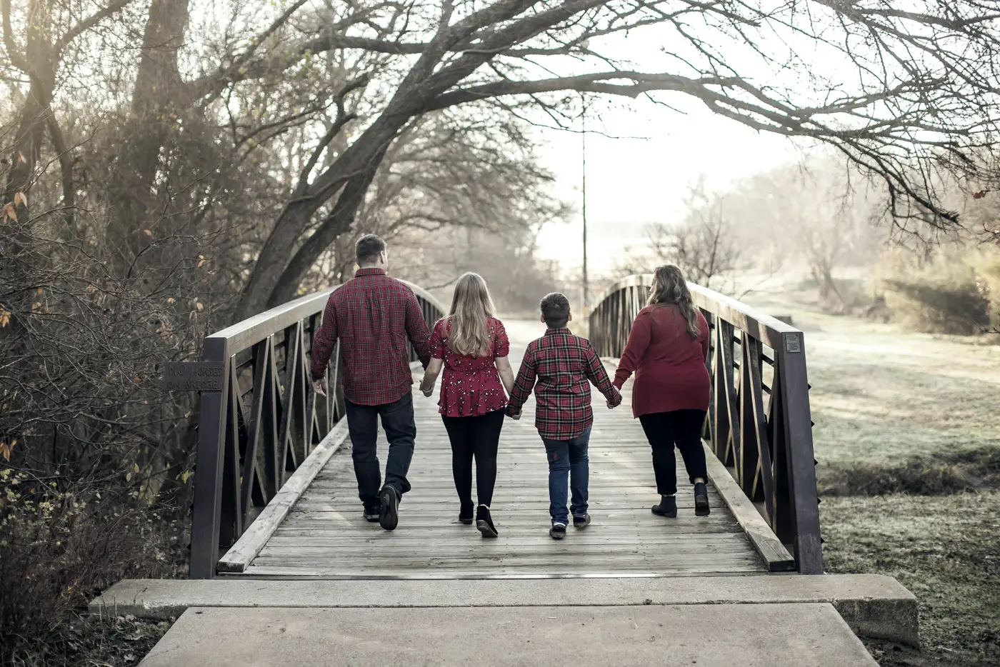

Advocacia de famíliae mediaçãoem Rio Preto.
Anderson Goulart
OAB/SP 538.504
Divórcio, guarda, pensão, partilha. Quando a família muda de forma, o que mais pesa é a conversa. Por isso o trabalho começa por ela: com técnica, calma e diálogo.
Onde atua
Família em primeiro lugar. Também Consumidor e Imobiliário.
Também
mediador judicial.
Quando há espaço para acordo, a conversa vem antes do processo. Guarda, pensão e partilha podem ser decididas a dois, com um terceiro imparcial conduzindo.

Anderson Goulart
- Inscrição
- OAB/SP 538.504
- Formação
- Pós-graduado em Direito de Família, Direito Imobiliário e Processo Civil
- Também
- Mediador judicial
Como funciona
Atendimento online, com horário marcado.
- 01
Mensagem pelo WhatsApp
Você conta o essencial e escolhe um horário.
- 02
Primeira conversa
Por vídeo, sem pressa, para ouvir a história inteira.
- 03
Os caminhos possíveis
Acordo, mediação ou ação judicial, explicados com clareza.
- 04
Acompanhamento
Cada etapa explicada, do primeiro documento ao fim.


Para a primeira conversa
- Documento com foto e CPF
- Certidão de casamento ou de nascimento
- Comprovantes de renda e de despesas
- Documentos dos bens, se houver
Rio Preto e todo o noroeste paulista.
A cidade e as famílias que vivem nela


Perguntas frequentes
O atendimento pode ser online?
Sim. A primeira conversa pode ser por vídeo, com horário marcado pelo WhatsApp.
O que é mediação?
Uma conversa conduzida por um terceiro imparcial, para que as partes construam juntas um acordo sobre guarda, pensão ou partilha.
Dá para revisar uma pensão já fixada?
A lei permite pedir revisão quando muda a necessidade de quem recebe ou a possibilidade de quem paga. Cada caso é analisado na conversa.
Atende fora de Rio Preto?
Sim. Com o atendimento online, a distância não impede a primeira conversa.